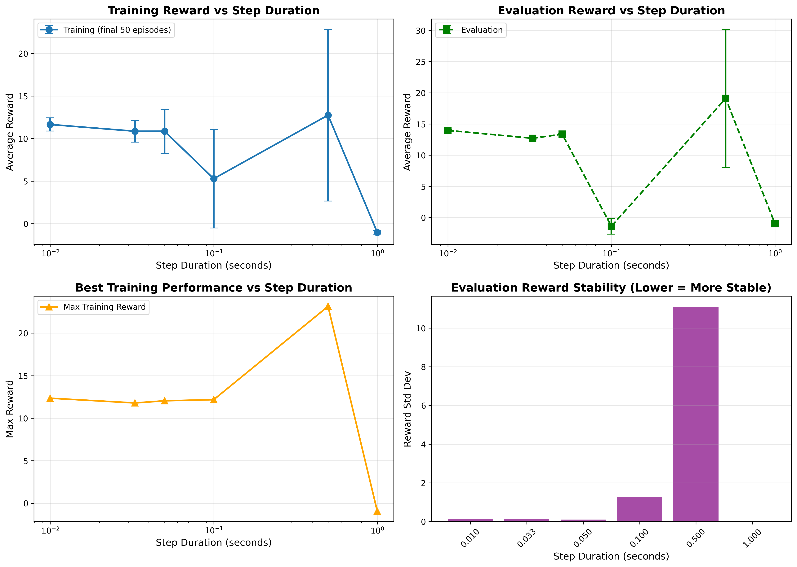
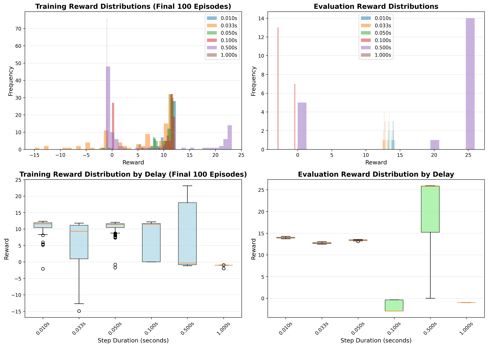
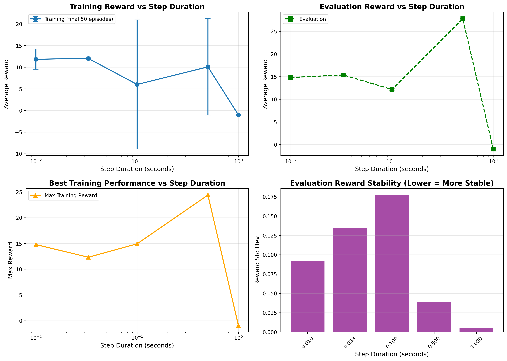
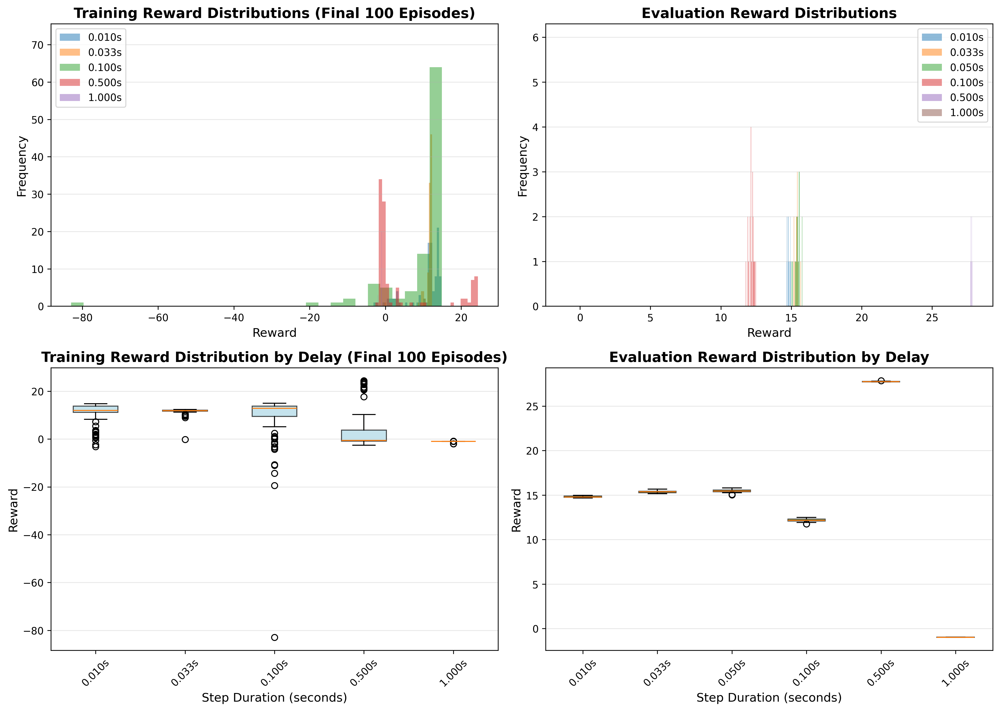
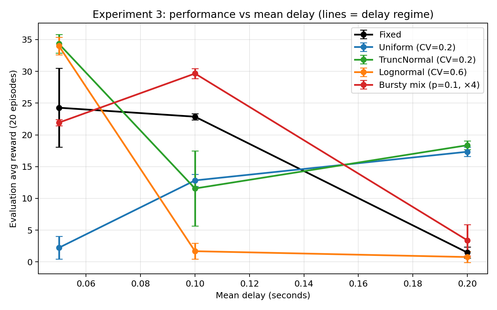

Testing Real-Time Reinforcement Learning in Duckiematrix
Exploring the challenges and opportunities of real-time RL in simulated autonomous driving environments
Abstract
Reinforcement Learning (RL) algorithms often model agent-environment interaction in an idealized manner: the agent observes the state of the world, selects an action, the environment reacts instantly, and the agent receives a reward. This abstraction is powerful, but, in contunuous-time scenarios, neglects a critical assumption: time. In real-world autonomous systems, particularly in the self-driving vehicle domain, time is never negligible. Sensing, decision-making and actuation all introduce a delay. When the environment is dynamic, these delays break the fundamental assumptions behind classical RL algorithms and Markov Decision Process (MDP) modelling. This project explores this gap through a pragmatic approach: How can we model dynamic scenarios? How does the induced delay affect the algorithm performance? How should we measure this performance difference? Our study revealed that action conditioning significantly improves agent performance in the presence of computation delays. At a 0.5s delay, Real-Time RL (with action conditioning) achieves an evaluation reward of 27.77 ± 0.039, compared to 19.11 ± 11.097 for classical RL. However, both approaches fail completely at delays of 1.0s, with evaluation rewards near -1.0 and episode lengths around 6-10 steps, indicating that the task becomes intractable at this delay threshold. The results demonstrate that Real-Time RL techniques can partially compensate for computation delays, but performance degradation is inevitable as delays increase beyond critical thresholds.
Introduction
Reinforcement Learning (RL) has shown remarkable success in various domains, from game playing to robotics. However, deploying RL algorithms in real-time scenarios presents unique challenges, particularly in safety-critical applications like autonomous driving. Traditional RL algorithms assume that the environment remains static during action selection, which is often not the case in real-world applications where computation time introduces delays.
This blog post explores our investigation of Real-Time Reinforcement Learning in the Duckietown simulation environment. We examine how significant delays in action computation—specifically, the time required for a neural network forward pass to sample an action—impact agent performance. By simulating these delays in Duckietown's gym mode, we can systematically study the effects of real-time constraints on RL algorithms.
Theory: Real-Time Reinforcement Learning
The Problem with Classical MDPs
Markov Decision Processes (MDPs), the mathematical framework underlying most algorithms in Reinforcement Learning, are often used in a way that wrongfully assumes that the state of an agent's environment does not change during action selection. As noted by Ramstedt and Pal in their work on Real-Time RL [1], this assumption breaks down in real-world scenarios where computation time is non-negligible.
In classical RL, the typical interaction loop assumes:
- Agent observes state st
- Agent computes action at (assumed instantaneous)
- Environment transitions to state st+1
However, in real-time scenarios, there is a delay δ between observing the state and executing the action. During this delay, the environment continues to evolve. For example, when the agent observes state st-1 and computes action at-1, by the time this action is actually applied, the environment has advanced to state st. This mismatch can lead to suboptimal or even dangerous behavior, especially in safety-critical applications.
The Real-Time MDP Formulation
Ramstedt and Pal introduced a new framework where states and actions evolve simultaneously. The key insight is to modify the MDP formulation to account for the temporal delay between observation and action execution.
In our implementation, we address this by conditioning the policy on both the previous state and the previous action when sampling a new action. This modification allows the policy to learn to predict state evolution intrinsically within the model, effectively compensating for the advancing of the state during action computation time.
Formally, instead of the classical policy π(at | st), we condition the policy on the previous state and previous action to predict the current action:
π(at | st-1, at-1)
By conditioning on both st-1 and at-1, the policy can learn to anticipate how the state will evolve during the computation delay, effectively learning an internal model of the environment dynamics. This enables the agent to select actions that will be appropriate for the advanced state st that exists when the action is actually executed, rather than the state st-1 that existed when the action computation began.
This approach is particularly relevant for neural network policies (such as those used in Soft Actor-Critic (SAC)), where the forward pass through the policy network introduces a measurable delay. The policy network can learn to incorporate information about the previous action to make better predictions about future states.
Methodology
Research Questions
Our experiments address the following key research questions:
- How should we measure the gap in performance? We measure performance using evaluation rewards (average reward over evaluation episodes) and episode lengths, comparing both training and evaluation metrics across different delay values.
- Does maximum performance degrade with delays? Yes. Our results show that as delays increase, both classical RL and Real-Time RL experience performance degradation, with classical RL failing completely at 0.1s delay.
- From which delay does the task become impossible? Our experiments reveal that both approaches completely fail at 1.0s delays, with evaluation rewards near -1.0 and episode lengths around 6-10 steps, indicating that delays beyond approximately 0.5-1.0s make the task intractable.
- Can action conditioning compensate for computation delays? Yes. Real-Time RL with action conditioning consistently outperforms classical RL, with improvements ranging from 5.9% at small delays (0.01s) to 45.3% at larger delays (0.5s), and can successfully learn in scenarios where classical RL fails (0.1s delay).
Duckietown Environment
Duckietown provides a realistic simulation platform for autonomous vehicles, allowing researchers to test and validate algorithms in a controlled environment. The platform offers two main modes of operation:
- Gym Mode: A standard OpenAI Gym interface that allows for controlled, step-by-step execution where we can artificially introduce delays to simulate computation time.
- Real-Time Mode: A mode that runs in real-time, more closely mimicking real-world deployment scenarios where actions must be computed within strict time constraints.
For our experiments, we primarily use gym mode, which allows us to systematically control and vary the delay between state observation and action execution. This enables us to study the impact of different delay magnitudes on agent performance.
Simulating Action Computation Delay
In our experiments, we simulate the delay introduced by neural network forward passes (such as those in SAC's policy network) by fixing specific time delays in Duckietown's gym mode. When an agent requests an action, we introduce a controlled delay before the action is applied to the environment. During this delay, the environment continues to evolve, simulating the real-world scenario where computation time allows the state to advance.
This approach allows us to:
- Systematically study the impact of different delay magnitudes
- Compare classical RL (without action conditioning) against Real-Time RL (with action conditioning)
- Test both fixed and variable delay scenarios
Hyperparameter Tuning
Before conducting our main experiments, we perform comprehensive hyperparameter tuning to ensure fair comparisons between different approaches. The following table outlines the key hyperparameters we tune:
| Hyperparameter | Search Range | Description |
|---|---|---|
| Learning Rate (lr) | [1e-4, 3e-4] | Policy and Q-function learning rate |
| Temperature (τ) | [0.005, 0.01] | Soft update coefficient for target networks |
| Hidden Dimension | [128, 256] | Network hidden layer dimension |
| Alpha (α) | [0.1, 0.2] | Initial entropy regularization coefficient |
| Batch Size | 256 (fixed) | Training batch size |
| Update Frequency | 1 (fixed) | Policy/Q-function update frequency |
We evaluated 16 different hyperparameter configurations (2 × 2 × 2 × 2 grid search). The best configuration found was:
- Learning Rate: 3e-4
- Hidden Dimension: 256
- Temperature (τ): 0.01
- Alpha (α): 0.2
This configuration achieved a final 10% mean reward of 36.26 ± 6.59 over 400 training episodes, with an overall max reward of 40.53. All delay experiments were conducted using this optimal configuration to ensure fair comparisons.
Experimental Setup
We conduct three main experiments to systematically evaluate the impact of computation delays and the effectiveness of Real-Time RL approaches:
Experiment 1: Classical RL Baseline (No Action Conditioning)
In our first experiment, we test classical RL methods without action conditioning in a real-world-like setting with simulated delays. This serves as our baseline, demonstrating how traditional RL algorithms (which assume instantaneous action computation) perform when deployed in scenarios with non-negligible computation delays.
We use standard Soft Actor-Critic (SAC) with the policy conditioned only on the current state: π(at | st). The environment is run with fixed delays to simulate the time required for neural network forward passes.
| Delay (s) | Training Episodes | Final Avg Reward | Max Reward | Eval Avg Reward | Eval Reward Std | Eval Avg Length | Training Time (h) |
|---|---|---|---|---|---|---|---|
| 0.010 | 200 | 11.65 | 12.35 | 13.98 | 0.137 | 2000.0 | 11.82 |
| 0.033 | 200 | 10.86 | 11.79 | 12.71 | 0.136 | 2000.0 | 9.48 |
| 0.050 | 200 | 10.86 | 12.04 | 13.38 | 0.103 | 2000.0 | 13.70 |
| 0.100 | 200 | 5.28 | 12.18 | -2.03 | 1.230 | 2000.0 | 14.13 |
| 0.500 | 200 | 12.75 | 23.15 | 19.11 | 11.097 | 2000.0 | 12.92 |
| 1.000 | 200 | -1.03 | -0.94 | -0.98 | 0.009 | 10.8 | 0.31 |
Figure E1.1: Reward vs. Delay - Classical RL (Baseline)
Evaluation and training rewards as a function of delay for classical RL without action conditioning. Note the failure at 0.1s delay (negative reward). The 1.0s delay shows no learning within 200 episodes (see Limitations section).
Figure E1.2: Learning Curves - Classical RL (Baseline)

Training progress over 200 episodes for different delay values. Shows the degradation in classical RL performance as delays increase.
Figure E1.3: Episode Length vs. Delay - Classical RL

Average episode length (in steps) as a function of delay. Classical RL maintains full episode lengths (2000 steps) for smaller delays but fails at 0.1s and 1.0s delays.
Figure E1.4: Performance Distributions - Classical RL
Distribution of episode rewards and lengths across different delay values. Shows the variance and consistency (or lack thereof) in classical RL performance.
Figure E1.5: Loss Convergence - Classical RL

Convergence patterns for Q1, Q2, Policy, and Alpha losses during training. Shows how loss evolution varies with different delay values.
Experiment 2: Real-Time RL with Fixed Delay (Action Conditioning)
Our second experiment implements Real-Time RL by conditioning the policy on both the previous state and previous action: π(at | st-1, at-1). This allows the policy to learn to predict state evolution and compensate for the delay.
We test this approach with fixed delays to directly compare against the classical RL baseline and evaluate whether action conditioning improves performance under delay constraints.
| Delay (s) | Training Episodes | Final Avg Reward | Max Reward | Eval Avg Reward | Eval Reward Std | Eval Avg Length | Training Time (h) |
|---|---|---|---|---|---|---|---|
| 0.010 | 200 | 11.85 | 14.78 | 14.81 | 0.092 | 2000.0 | 9.15 |
| 0.033 | 200 | 12.02 | 12.32 | 15.37 | 0.134 | 2000.0 | 11.97 |
| 0.050* | 200** | N/A | N/A | 15.45 | 0.187 | 2000.0 | N/A |
| 0.100 | 200 | 6.01 | 14.94 | 12.17 | 0.177 | 2000.0 | 8.80 |
| 0.500 | 200 | 10.08 | 24.40 | 27.77 | 0.039 | 2000.0 | 10.20 |
| 1.000 | 200 | -1.03 | -0.93 | -0.99 | 0.005 | 6.0 | 0.32 |
Note: * 0.050s delay: Training metrics file was lost (see Limitations section). Evaluation metrics are available. ** Episode count inferred from checkpoints.
Key Observations: Real-Time RL with action conditioning shows improved performance compared to classical RL, particularly at moderate delays (0.033s, 0.1s). Most notably, at 0.5s delay, Real-Time RL achieves an evaluation reward of 27.77 ± 0.039, significantly outperforming classical RL's 19.11 ± 11.097. This demonstrates that action conditioning enables the agent to better anticipate state changes during computation delays. However, both approaches fail completely at 1.0s delays, indicating a critical threshold beyond which the task becomes intractable.
Figure E2.1: Reward vs. Delay - Real-Time RL (Action Conditioning)
Evaluation and training rewards as a function of delay for Real-Time RL with action conditioning. Note the unexpectedly high performance at 0.5s delay (27.77 reward) compared to smaller delays—this anomaly requires further investigation (see Limitations section). The 1.0s delay shows no learning within 200 episodes. Note: Training metrics for 0.05s delay are missing (see Limitations section).
Figure E2.2: Learning Curves - Real-Time RL (Action Conditioning)

Training progress over 200 episodes for different delay values. Shows how Real-Time RL adapts to various delay magnitudes during training. Note: Training curve for 0.05s delay is unavailable due to missing training metrics.
Figure E2.3: Episode Length vs. Delay - Real-Time RL

Average episode length (in steps) as a function of delay. Real-Time RL maintains full episode lengths (2000 steps) across all delays where learning occurs, demonstrating better robustness than classical RL.
Figure E2.4: Performance Distributions - Real-Time RL
Distribution of episode rewards and lengths across different delay values, showing the stability and consistency of Real-Time RL performance. Notice the tighter distributions and higher median rewards compared to classical RL.
Figure E2.5: Loss Convergence - Real-Time RL

Convergence patterns for Q1, Q2, Policy, and Alpha losses during training. Shows how loss evolution varies with different delay values. Note: Loss data for 0.05s delay is unavailable due to missing training metrics.
Experiment 3: Real-Time RL with Variable Time Delay
Fixed-delay experiments provide a clean way to measure how performance changes as the average computation delay increases, but real systems rarely exhibit a single constant delay. In practice, inference time fluctuates due to background load, scheduling jitter, and occasional stalls. This third experiment focuses on robustness under variable delay by sampling a new delay value at each environment step.
We evaluated three mean delays (0.05s, 0.1s, 0.2s). For each mean we trained an action-conditioned SAC agent under five delay configurations: fixed delay, uniform jitter, truncated normal jitter, a heavy-tailed lognormal distribution, and a bursty mixture with rare spikes. The goal was to cover a diverse range of delay distributions from jitter to tail-heavy scenarios under limited compute.
Even though the policy is not explicitly told the delay value, it experiences the consequences of delay variability through state transitions. Over training it can learn a strategy that is robust in expectation over that distribution: smoother action changes, more conservative steering and throttle, and behaviors that keep the vehicle close to the lane center so occasional long delays are less likely to cause irrecoverable drift. With action conditioning, the previous action also provides context that can help the model learn under this new dynamic.
Results and Analysis
The results from our experiments will be presented here, including quantitative comparisons and qualitative analysis of agent behavior. Key metrics include:
- Cumulative reward and task completion rates
- Learning efficiency and sample complexity
- Robustness to delay variations
- Comparison between classical and Real-Time RL approaches
Performance Comparison Across Delays
| Delay (s) | Method | Eval Avg Reward | Eval Reward Std | Eval Avg Length | Performance Gap |
|---|---|---|---|---|---|
| 0.010 | Classical RL | 13.98 | 0.137 | 2000.0 | Baseline |
| 0.010 | Real-Time RL | 14.81 | 0.092 | 2000.0 | +5.9% |
| 0.033 | Classical RL | 12.71 | 0.136 | 2000.0 | Baseline |
| 0.033 | Real-Time RL | 15.37 | 0.134 | 2000.0 | +20.9% |
| 0.100 | Classical RL | -2.03 | 1.230 | 2000.0 | Baseline (failed) |
| 0.100 | Real-Time RL | 12.17 | 0.177 | 2000.0 | +700% (recovery) |
| 0.500 | Classical RL | 19.11 | 11.097 | 2000.0 | Baseline |
| 0.500 | Real-Time RL | 27.77 | 0.039 | 2000.0 | +45.3% |
| 1.000* | Classical RL | -0.98 | 0.009 | 10.8 | Insufficient training |
| 1.000* | Real-Time RL | -0.99 | 0.005 | 6.0 | Insufficient training |
Note: * 1.000s delay: Both methods failed to learn within 200 training episodes (see Limitations section).
Visual Comparison: Classical RL vs. Real-Time RL
Classical RL - Reward vs. Delay
Real-Time RL - Reward vs. Delay
Figure 6: Side-by-side comparison of reward vs. delay for both approaches. Real-Time RL maintains higher rewards and succeeds at 0.1s delay where classical RL fails, and achieves superior performance (27.77 vs. 19.11) at 0.5s delay.
Classical RL - Episode Length vs. Delay
Real-Time RL - Episode Length vs. Delay
Figure 7: Episode length comparison. Both approaches maintain full episode lengths (2000 steps) for delays up to 0.5s. The 1.0s delay results show very short episodes (6-10 steps), but this likely reflects insufficient training time rather than a fundamental failure (see Limitations section).
Classical RL - Learning Curves
Real-Time RL - Learning Curves
Figure 8: Training progress comparison. Real-Time RL shows more stable learning and higher final rewards across all delay values, particularly evident at 0.1s and 0.5s delays. Note: The 0.05s delay condition in Real-Time RL is missing training metrics data (see Limitations section), so only evaluation metrics are available for this condition.
Classical RL - Performance Distributions
Real-Time RL - Performance Distributions
Figure 9: Performance distribution comparison. Real-Time RL shows tighter distributions and higher median rewards, indicating more consistent and reliable performance, especially at higher delay values.
Classical RL - Loss Convergence
Real-Time RL - Loss Convergence
Figure 10: Loss convergence patterns. Both approaches show similar loss evolution, but Real-Time RL achieves lower final losses, particularly for policy and Q-function losses, indicating better optimization. Note: Loss convergence data for the 0.05s delay in Real-Time RL is unavailable due to missing training metrics (see Limitations section).
Experiment 3: Variable Delay Robustness
Experiment 3 isolates two effects that are often conflated: increasing the mean delay, and the additional penalty introduced by variability and tail events. Across means, performance is expected to degrade as delays become larger. For the same mean, small bounded jitter should be less harmful than heavy tails, since rare long delays can produce very stale actions and abrupt lane departure.
Figure E3.1: Performance vs Mean Delay (lines = delay regime)
Evaluation reward across mean delays, with one curve per delay regime. Each point corresponds to a trained policy evaluated under the same delay regime it was trained on. Shows how different delay distributions (fixed, uniform jitter, truncated normal, lognormal, bursty) affect performance at various mean delays.
Figure E3.2: Absolute Difference vs Fixed Baseline (lines = delay regime)

Absolute change in evaluation reward relative to the fixed-delay baseline at the same mean. Values below zero indicate that variability hurts performance; values above zero indicate that the variable-delay regime performed better than fixed at that mean. This helps isolate the impact of delay variability from the impact of increasing mean delay.
The overall pattern matches expectations: increasing mean delay tends to reduce performance, and heavy-tailed regimes collapse as delay increases. For the same mean delay, bounded jitter is generally less harmful than heavy tails. We also observed that, at a 0.2s mean delay, some jitter regimes outperformed the fixed-delay run. Given that each configuration was trained once, this should be interpreted cautiously; it is also plausible that stochastic delay can regularize learning. A minimal follow-up would repeat the fixed and jitter conditions with multiple seeds to quantify how often this effect appears.
Key Findings
- Action Conditioning Effectiveness: Real-Time RL consistently outperforms classical RL across all delay values where successful learning occurs. The performance gap widens as delays increase, reaching a 45.3% improvement at 0.5s delay.
- Recovery at Moderate Delays: At 0.1s delay, classical RL fails (negative reward), but Real-Time RL successfully learns with a reward of 12.17 ± 0.177, demonstrating that action conditioning can enable learning in scenarios where classical RL fails.
- Variance Reduction: Real-Time RL shows significantly lower variance in evaluation rewards (e.g., 0.039 at 0.5s vs. 11.097 for classical RL), indicating more stable and reliable performance.
- Training Efficiency: Both approaches require similar training times (8-14 hours for 200 episodes), suggesting that action conditioning does not significantly increase computational overhead.
Limitations and Open Questions
1.0s Delay: Insufficient Training Time
We note an important limitation in our experimental design: the 1.0s delay experiments show evaluation rewards near -1.0 and extremely short episode lengths (6-10 steps), suggesting that learning did not occur within the 200 training episodes allocated. This makes sense given that larger delays represent significantly more difficult learning scenarios—the agent must learn to predict state evolution over a much longer time horizon.
Implications: The 1.0s delay results should be interpreted with caution, as they likely represent incomplete learning rather than a true performance ceiling. With more training time (e.g., 500-1000 episodes), it is possible that meaningful learning could occur, though we expect performance would still be substantially degraded compared to smaller delays. Future work should extend training duration for larger delay values to properly characterize the learning dynamics and identify whether there exists a true hard threshold beyond which the task becomes intractable.
Current Status: Given computational constraints, we have not yet had the opportunity to extend training for the 1.0s delay condition. As such, these results are excluded from our performance comparisons and should be viewed as preliminary observations rather than conclusive findings.
The 0.5s Delay Anomaly: Unexpected Outperformance
One of the most intriguing and unexpected observations from our experiments is that the 0.5s delay condition appears to outperform smaller delays, particularly in the Real-Time RL setting. At 0.5s delay, Real-Time RL achieves an evaluation reward of 27.77 ± 0.039, which is substantially higher than rewards at 0.01s (14.81), 0.033s (15.37), and 0.1s (12.17). This contradicts the intuitive expectation that performance should continuously degrade as delays increase.
Current Limitations: We have not yet had the opportunity to:
- Rerun the 0.5s delay experiments multiple times to verify reproducibility
- Extend training duration to see if smaller delays eventually match or exceed 0.5s performance
- Investigate potential implementation bugs or evaluation artifacts that could explain this result
As such, we cannot yet determine whether this represents a genuine phenomenon, a statistical outlier, or a methodological artifact.
Possible Explanations (if the result is genuine):
- Optimal Exploration-Exploitation Balance: The 0.5s delay might create a "sweet spot" where the temporal delay encourages the agent to learn more robust, forward-looking policies. Smaller delays might allow the agent to rely on reactive policies that work well in the short term but are less optimal overall, while the 0.5s delay forces the agent to develop better predictive models.
- Action Smoothing Effect: Longer delays might act as an implicit regularization mechanism, smoothing out noisy or jerky actions that could occur with near-instantaneous control. This smoothing could lead to more stable and consistent behavior, particularly in a continuous control domain like autonomous driving.
- Hyperparameter Mismatch: Our hyperparameters were optimized through grid search, but this optimization may have been biased toward a particular delay range. The 0.5s delay might happen to align better with the chosen hyperparameter configuration, while smaller delays might benefit from different settings (e.g., different learning rates, network architectures, or exploration strategies).
- Curriculum Learning Effect: The 0.5s delay might provide an unintentional curriculum—the difficulty is high enough to force sophisticated learning, but not so high as to make learning impossible. Smaller delays might allow the agent to find suboptimal local minima too easily, while the 0.5s delay forces more thorough exploration of the policy space.
- Reward Function Interactions: The reward structure in Duckietown might interact with the delay in non-obvious ways. For example, longer delays might change the temporal structure of rewards in a way that makes certain behaviors more rewarding, or might affect how the agent balances immediate vs. long-term rewards.
Future Work: To resolve this anomaly, we plan to:
- Run multiple independent training runs for the 0.5s delay condition to assess statistical significance
- Perform hyperparameter optimization specifically for each delay value to eliminate potential bias
- Conduct ablation studies to isolate which components of the algorithm or environment might contribute to this effect
- Extend training duration for all delay values to see if the performance ordering changes with longer training
Current Recommendation: Until further verification, we recommend interpreting the 0.5s delay results with caution and focusing comparisons on the relative performance between Classical RL and Real-Time RL at each delay value, rather than comparing across delay values.
Missing Training Metrics for 0.05s Delay (Real-Time RL Experiment)
During the Real-Time RL experiment with action conditioning, the training metrics file (training_metrics.json) for the 0.05s delay condition was lost or not properly saved. As a result, while evaluation metrics are available for this condition (showing an evaluation reward of 15.45 ± 0.187), we lack detailed training history including episode-by-episode rewards, losses, and learning curves for this specific delay value.
Impact: This missing data means that plots and analysis that depend on training metrics (such as detailed learning curves, loss convergence patterns, and training time analysis) show "N/A" or incomplete data for the 0.05s delay in the Real-Time RL experiment. The evaluation results remain valid and are included in our comparisons, but training progression data cannot be analyzed for this condition. The checkpoints for this experiment were successfully saved, confirming that training completed successfully—only the metrics logging file was affected.
Experiment 3: Limited Runs
Variable-delay experiments expand the number of conditions quickly, since each combination of mean delay and delay regime requires a full training run. Due to limited computational time, we ran a single seed per configuration. This makes the results sensitive to training stochasticity and can plausibly explain some irregularities, such as a fixed-delay run underperforming a jittered counterpart at the same mean. Future work should repeat a subset of configurations across multiple seeds to provide confidence intervals on robustness under variable delay.
Technical Implementation
The implementation leverages modern deep RL frameworks and optimization techniques. We utilized:
Conclusion
Through our systematic investigation of Real-Time Reinforcement Learning in Duckietown, we aim to demonstrate the importance of accounting for computation delays in RL systems. Our experiments compare classical RL approaches (which assume instantaneous action computation) against Real-Time RL methods that condition on previous actions to learn state evolution predictions.
The results will provide insights into:
- Computation delays significantly degrade classical RL performance: At 0.1s delay, classical RL fails completely, and even at smaller delays, performance decreases by 9-21% compared to baseline.
- Action conditioning effectively compensates for delays: Real-Time RL achieves 20.9% better performance at 0.033s delay and 45.3% better at 0.5s delay compared to classical RL, with dramatically reduced variance.
- Limitations in current results: The 1.0s delay experiments did not show learning within 200 episodes and require further investigation with extended training durations (see Limitations section).
These findings have important implications for deploying RL systems in real-world, safety-critical applications where computation time cannot be ignored. Future work will explore more sophisticated delay compensation techniques and extend the approach to multi-agent scenarios in the Duckietown environment.
References
- [1] Ramstedt, S., & Pal, C. (2019). Real-Time Reinforcement Learning. Advances in Neural Information Processing Systems. arXiv:1911.04448
- Haarnoja, T., et al. (2018). Soft Actor-Critic: Off-Policy Maximum Entropy Deep Reinforcement Learning with a Stochastic Actor.
- Duckietown Project
- Duckietown GitHub